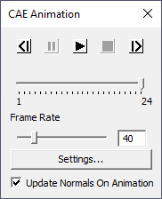

CAE | Animate
VCollab Pro provides a user friendly animation tool for CAE models in which users can control
- Speed of animation
- Direction of animation
- Number of Frames per cycle using Animation settings.
CAE Animation Control Panel

The various controls available in the CAE Animation panel are explained below
Show previous frame in the animation Pauses the animation. Play Animation in forward direction Show next frame in the animation Stop Animation. It is enabled once animation starts. Current Frame Slider Slider position indicates current frame in the animation. Frame Rate Allows user to control animation speed by editing frame rate. Settings button Opens CAE Animation Settings panel Update Normals on Animation This option updates normals for each frame during animation.